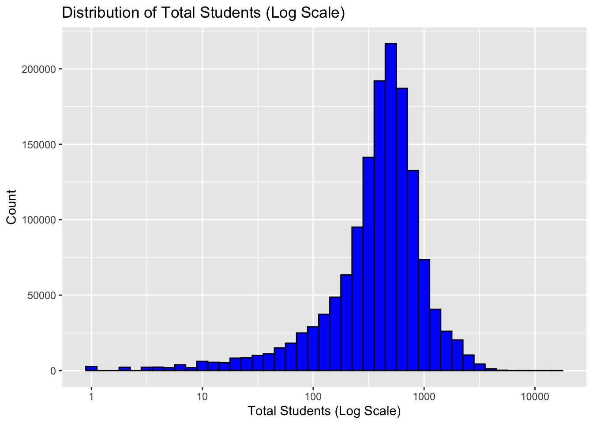
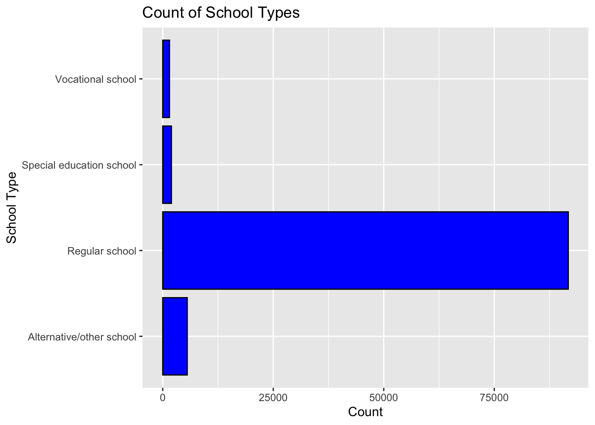
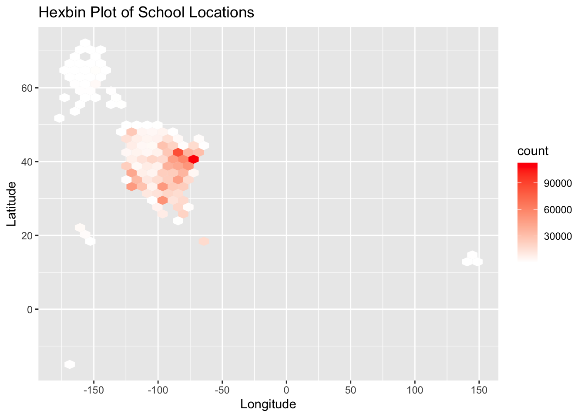
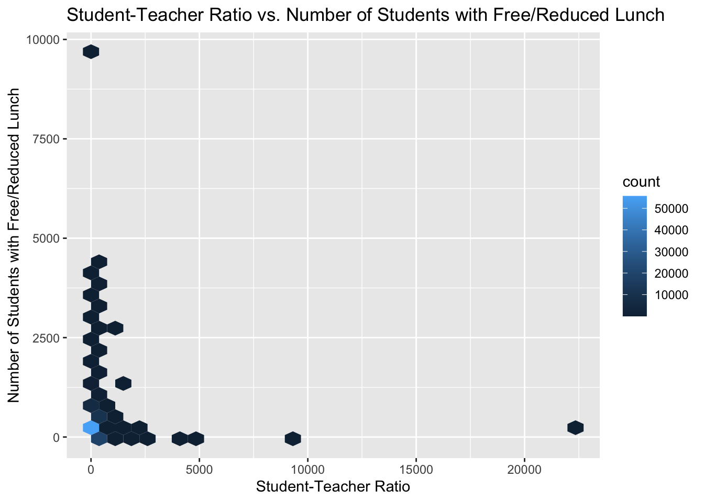
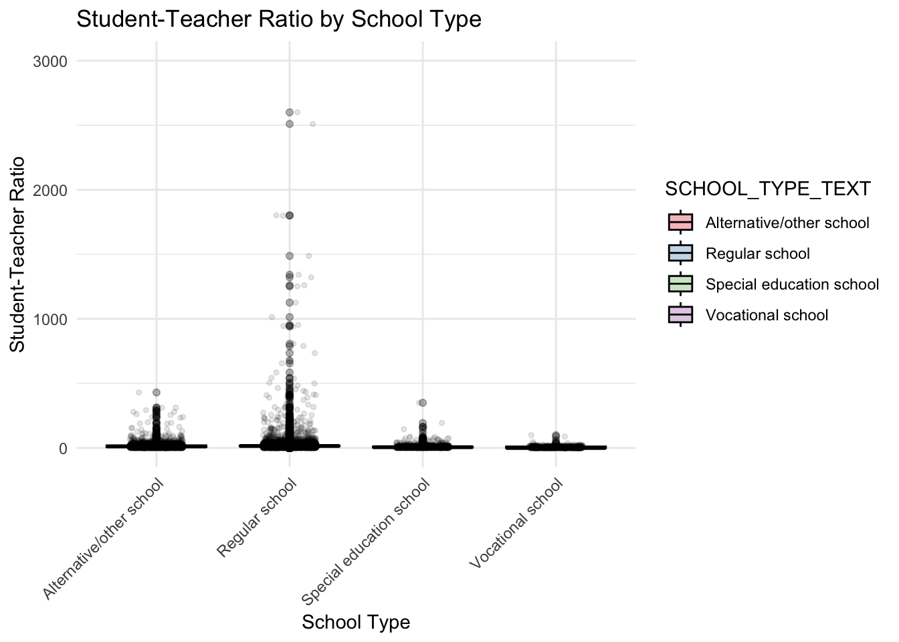

library(tidyverse)
library(ggplot2)
knitr::opts_chunk$set(echo = TRUE, warning=FALSE, message=FALSE)Challenge 5
challenge_5
railroads
cereal
air_bnb
pathogen_cost
australian_marriage
public_schools
usa_households
Introduction to Visualization
Challenge Overview
Today’s challenge is to:
- read in a data set, and describe the data set using both words and any supporting information (e.g., tables, etc)
- tidy data (as needed, including sanity checks)
- mutate variables as needed (including sanity checks)
- create at least two univariate visualizations
- try to make them “publication” ready
- Explain why you choose the specific graph type
- Create at least one bivariate visualization
- try to make them “publication” ready
- Explain why you choose the specific graph type
Read in data
- Public School Characteristics ⭐⭐⭐⭐
data <- readr::read_csv("_data/Public_School_Characteristics_2017-18.csv")
head(data)# A tibble: 6 × 79
X Y OBJEC…¹ NCESSCH NMCNTY SURVY…² STABR LEAID ST_LE…³ LEA_N…⁴ SCH_N…⁵
<dbl> <dbl> <dbl> <chr> <chr> <chr> <chr> <chr> <chr> <chr> <chr>
1 -149. 61.6 1 020051… Matan… 2017-2… AK 0200… AK-33 Matanu… John S…
2 -157. 71.3 2 020061… North… 2017-2… AK 0200… AK-36 North … Kiita …
3 -151. 60.5 3 020039… Kenai… 2017-2… AK 0200… AK-24 Kenai … Soldot…
4 -151. 60.6 4 020039… Kenai… 2017-2… AK 0200… AK-24 Kenai … Kaleid…
5 -151. 60.6 5 020039… Kenai… 2017-2… AK 0200… AK-24 Kenai … Marath…
6 -133. 56.1 6 020070… Princ… 2017-2… AK 0200… AK-44 Southe… Whale …
# … with 68 more variables: LSTREET1 <chr>, LSTREET2 <chr>, LSTREET3 <lgl>,
# LCITY <chr>, LSTATE <chr>, LZIP <chr>, LZIP4 <chr>, PHONE <chr>,
# GSLO <chr>, GSHI <chr>, VIRTUAL <chr>, TOTFRL <dbl>, FRELCH <dbl>,
# REDLCH <dbl>, PK <dbl>, KG <dbl>, G01 <dbl>, G02 <dbl>, G03 <dbl>,
# G04 <dbl>, G05 <dbl>, G06 <dbl>, G07 <dbl>, G08 <dbl>, G09 <dbl>,
# G10 <dbl>, G11 <dbl>, G12 <dbl>, G13 <lgl>, TOTAL <dbl>, MEMBER <dbl>,
# AM <dbl>, HI <dbl>, BL <dbl>, WH <dbl>, HP <dbl>, TR <dbl>, FTE <dbl>, …Briefly describe the data
This dataset is a comprehensive collection of data pertaining to schools across the United States. It includes geographical information, student and teacher demographics, funding sources, and specific characteristics of each school. Key data points include the school’s name, its physical address, number of students and teachers, student-to-teacher ratio, and the operational status of the school. Information about the school type, whether it’s a regular, virtual, charter, or magnet school, is also included. The dataset serves as a valuable resource for analyzing and understanding the diverse facets of the U.S. education system.
Tidy Data (as needed)
### Delete empty columns
data <- data %>%
select(-LSTREET2, -LSTREET3,-LZIP4,-UG,
-AE)
tidy_data <- data %>%
pivot_longer(cols = c('PK', 'KG', 'G01', 'G02', 'G03', 'G04', 'G05', 'G06', 'G07', 'G08', 'G09', 'G10', 'G11', 'G12', 'G13'),
names_to = "Grade",
values_to = "Student_Count")
head(tidy_data)# A tibble: 6 × 61
X Y OBJEC…¹ NCESSCH NMCNTY SURVY…² STABR LEAID ST_LE…³ LEA_N…⁴ SCH_N…⁵
<dbl> <dbl> <dbl> <chr> <chr> <chr> <chr> <chr> <chr> <chr> <chr>
1 -149. 61.6 1 020051… Matan… 2017-2… AK 0200… AK-33 Matanu… John S…
2 -149. 61.6 1 020051… Matan… 2017-2… AK 0200… AK-33 Matanu… John S…
3 -149. 61.6 1 020051… Matan… 2017-2… AK 0200… AK-33 Matanu… John S…
4 -149. 61.6 1 020051… Matan… 2017-2… AK 0200… AK-33 Matanu… John S…
5 -149. 61.6 1 020051… Matan… 2017-2… AK 0200… AK-33 Matanu… John S…
6 -149. 61.6 1 020051… Matan… 2017-2… AK 0200… AK-33 Matanu… John S…
# … with 50 more variables: LSTREET1 <chr>, LCITY <chr>, LSTATE <chr>,
# LZIP <chr>, PHONE <chr>, GSLO <chr>, GSHI <chr>, VIRTUAL <chr>,
# TOTFRL <dbl>, FRELCH <dbl>, REDLCH <dbl>, TOTAL <dbl>, MEMBER <dbl>,
# AM <dbl>, HI <dbl>, BL <dbl>, WH <dbl>, HP <dbl>, TR <dbl>, FTE <dbl>,
# LATCOD <dbl>, LONCOD <dbl>, ULOCALE <chr>, STUTERATIO <dbl>, STITLEI <chr>,
# AMALM <dbl>, AMALF <dbl>, ASALM <dbl>, ASALF <dbl>, HIALM <dbl>,
# HIALF <dbl>, BLALM <dbl>, BLALF <dbl>, WHALM <dbl>, WHALF <dbl>, …# Factorization of individual variables
tidy_data$STABR <- factor(tidy_data$STABR)
tidy_data$SURVYEAR <- factor(tidy_data$SURVYEAR)
tidy_data$VIRTUAL <- factor(tidy_data$VIRTUAL)
tidy_data$SCHOOL_TYPE_TEXT <- factor(tidy_data$SCHOOL_TYPE_TEXT)
tidy_data$SCHOOL_LEVEL <- factor(tidy_data$SCHOOL_LEVEL)
tidy_data$CHARTER_TEXT <- factor(tidy_data$CHARTER_TEXT)
tidy_data$MAGNET_TEXT <- factor(tidy_data$MAGNET_TEXT)
tidy_data$STATUS <- factor(tidy_data$STATUS)
tidy_data$SY_STATUS_TEXT <- factor(tidy_data$SY_STATUS_TEXT)
# View factor levels
levels(tidy_data$STABR) [1] "AK" "AL" "AR" "AS" "AZ" "BI" "CA" "CO" "CT" "DC" "DE" "FL" "GA" "GU" "HI"
[16] "IA" "ID" "IL" "IN" "KS" "KY" "LA" "MA" "MD" "ME" "MI" "MN" "MO" "MS" "MT"
[31] "NC" "ND" "NE" "NH" "NJ" "NM" "NV" "NY" "OH" "OK" "OR" "PA" "PR" "RI" "SC"
[46] "SD" "TN" "TX" "UT" "VA" "VI" "VT" "WA" "WI" "WV" "WY"I have chosen to factorize these variables as they represent categorical information. Variables like ‘STABR’, ‘SURVYEAR’, ‘VIRTUAL’, ‘SCHOOL_TYPE_TEXT’, ‘SCHOOL_LEVEL’, ‘CHARTER_TEXT’, ‘MAGNET_TEXT’, ‘STATUS’, and ‘SY_STATUS_TEXT’ are categories rather than continuous numbers. By converting these into factors, I am enabling R to treat them as categorical data, allowing for more accurate analysis and visualization. For example, ‘STABR’ is the abbreviation for states, which are distinct entities and should not be treated as numerical data. Similarly, ‘SURVYEAR’, though numeric, is categorical as I don’t perform arithmetic operations on it. The rest represent different aspects of the school system and are binary or categorical in nature. By treating these as factors, I am able to represent the data’s properties more accurately. ## Univariate Visualizations ### TOTAL
ggplot(tidy_data, aes(x = TOTAL)) +
geom_histogram(binwidth = 0.1, fill = 'blue', color = 'black') +
scale_x_log10() +
xlab('Total Students (Log Scale)') +
ylab('Count') +
ggtitle('Distribution of Total Students (Log Scale)')
This code produces a histogram that visualizes the distribution of total students at each school, but with a twist: it uses a logarithmic scale on the x-axis. The geom_histogram() function creates the histogram, and the binwidth = 0.1 argument sets the width of each bin in the histogram. The scale_x_log10() function transforms the x-axis to a log scale, which can make the plot easier to read and interpret when the data spans several orders of magnitude. The ‘fill’ and ‘color’ arguments in geom_histogram() set the color of the bars and their outline. Finally, xlab(), ylab(), and ggtitle() are used to label the x-axis, y-axis, and the plot title respectively. ### SCHOOL_TYPE_TEXT
ggplot(data, aes(SCHOOL_TYPE_TEXT)) +
geom_bar(fill = 'blue', color = 'black') +
xlab('School Type') +
ylab('Count') +
ggtitle('Count of School Types') +
coord_flip() # Flips the axes for easier reading
This code generates a bar chart that shows the count of different school types, as indicated by the SCHOOL_TYPE_TEXT field. The geom_bar() function creates the bar chart. The colors of the bars and their borders are set to blue and black respectively, as specified by the fill = 'blue', color = 'black' arguments. The labels for the x-axis and y-axis are set by xlab('School Type') and ylab('Count'), and the title of the plot is set by ggtitle('Count of School Types'). Finally, coord_flip() is used to flip the axes for easier reading. This is especially useful when the x-axis labels are text that would otherwise be displayed vertically and potentially overlap, making them difficult to read. ### Location
# Define the number of breaks you want on each axis
num_breaks <- 5
# Generate pretty breaks for x and y axis
x_breaks <- pretty(tidy_data$LONCOD, n = num_breaks)
y_breaks <- pretty(tidy_data$LATCOD, n = num_breaks)
# Create hexbin plot with coarser scale
ggplot(tidy_data, aes(x = LONCOD, y = LATCOD)) +
geom_hex(bins = 40) +
scale_fill_gradient(low = "white", high = "red") +
scale_x_continuous(breaks = x_breaks) +
scale_y_continuous(breaks = y_breaks) +
xlab('Longitude') +
ylab('Latitude') +
ggtitle('Hexbin Plot of School Locations')
This code generates a hexbin plot for school locations based on longitude and latitude. It helps overcome the issue of overplotting in scatter or bubble plots when dealing with large data sets. The plot is divided into hexagonal bins, with colors indicating the number of observations in each bin. The pretty() function is used to create user-friendly axis breaks.
Why did I choose a hexbin plot instead of a scatter plot or bubble plot for visualization? When dealing with a large number of data points distributed across a geographic space, scatter plots and bubble plots can suffer from overplotting, which makes it challenging to accurately perceive the number of observations in each area. In contrast, a hexbin plot divides the spatial area into numerous hexagons and uses color intensity within these hexagons to represent the number of observations. This approach effectively handles overplotting and excessive data points, making the visualization easier to comprehend.
Bivariate Visualization(s)
STUTERATIO-TOTFRL
ggplot(data, aes(x = STUTERATIO, y = TOTFRL)) +
geom_hex() +
xlab('Student-Teacher Ratio') +
ylab('Number of Students with Free/Reduced Lunch') +
ggtitle('Student-Teacher Ratio vs. Number of Students with Free/Reduced Lunch')
This code generates a hexbin plot to visualize the relationship between the student-teacher ratio and the number of students receiving free or reduced lunch. By using geom_hex(), it avoids the problem of point overlap in scatter plots. The depth of color indicates data density, helping me better understand the distribution of the data.
SCHOOL_TYPE_TEXT-STUTERATIO
ggplot(data, aes(x = SCHOOL_TYPE_TEXT, y = STUTERATIO)) +
geom_boxplot(aes(fill = SCHOOL_TYPE_TEXT), color = 'black', alpha = 0.3) +
geom_jitter(width = 0.2, size = 1, alpha = 0.1) +
scale_fill_brewer(palette = "Set1") +
theme_minimal() +
xlab('School Type') +
ylab('Student-Teacher Ratio') +
ggtitle('Student-Teacher Ratio by School Type') +
coord_flip() + # Flips the axes for easier reading
coord_cartesian(ylim = c(0, 3000)) + # Sets the y-axis limits
theme(axis.text.x = element_text(angle = 45, hjust = 1)) # Tilts the x-axis labels
In this code, I’m creating a combined box plot and jitter plot of student-teacher ratios across school types. Box plots reveal data quartiles and potential outliers, while jitter plots provide a more detailed distribution. The box plots are color-coded by school type for clarity, with an alpha transparency of 0.3 to keep overlaid jitter points visible.
Jitter points have a specified width, size, and alpha transparency for clarity without clutter. The color palette used is distinguishable by most, including color-blind individuals.
We’re using a minimalistic theme for clarity, flipping the axes for readability, limiting the y-axis to [0, 3000] to focus on the relevant data, and tilting x-axis labels to avoid overlap.